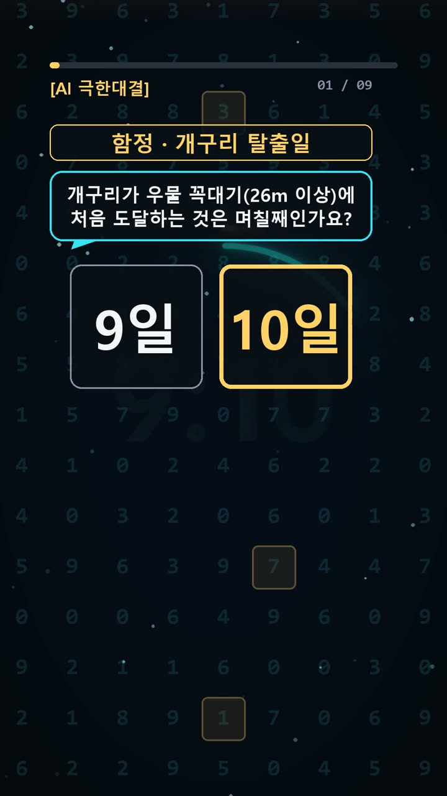
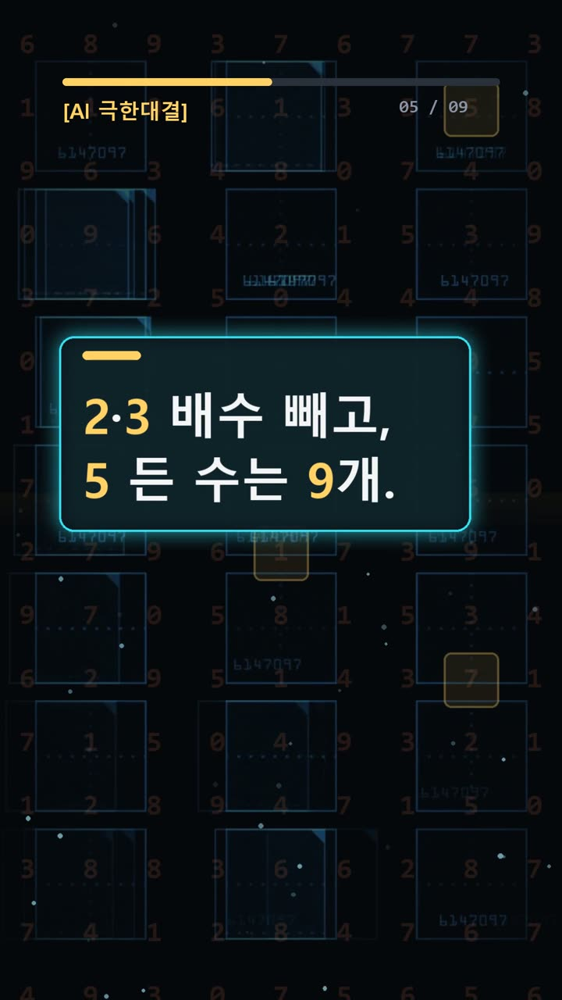
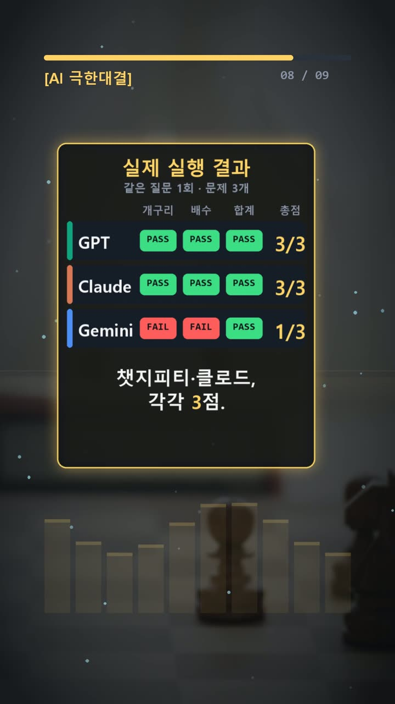

이 포스팅은 쿠팡 파트너스 및 토스쇼핑 쉐어링크 활동의 일환으로, 이에 따른 일정액의 수수료를 제공받습니다.
ai 비교 분석, 함정 3문제에서 갈린 정답과 검증법
서론
AI가 계산한 일정이나 코드 출력값을 업무 문서에 옮길 때, 짧고 또렷한 답은 믿기 쉽다. 하지만 조건 하나를 빠뜨리면 일정은 하루 앞당겨지고, 대상 수는 하나 늘어난다. 답만 복사하면 그 실수도 함께 옮겨 간다.
2026년 10월 22일 진행한 이번 실험에서는 GPT와 Claude가 각각 3문제를 모두 맞혔다. Gemini는 1문제를 맞히고 2문제를 틀렸다. 세 AI에 같은 질문을 한 번씩 주었고, 재시도는 하지 않았다.
이번 결과에서 볼 것은 특정 AI의 완승이 아니다. 공동 1위는 GPT와 Claude다. 더 유용한 관찰은 조건을 빠뜨린 답이 어떻게 만들어졌고, 사람이 어디를 확인하면 오류를 찾을 수 있었는지다.

실험 설계
문제는 세 가지였다. 개구리가 우물을 탈출하는 날짜, 여러 조건을 만족하는 자연수의 개수, 파이썬 코드의 출력값이다. 모두 질문은 짧지만, 앞에서 처리한 조건을 뒤에서도 유지해야 한다.
첫 문제는 깊이 26m인 우물이다. 개구리는 낮에 7m 올라가고 밤에 4m 내려간다. 단, 3의 배수인 날에는 낮에 5m만 올라간다. 둘째는 1부터 100까지에서 2와 3의 배수를 제외하고, 숫자 5가 들어간 수를 세는 문제다.
셋째는 다음 코드의 출력값을 묻는다.
it = iter([1, 2, 3, 4, 5]) print(2 in it, 2 in it, sum(it))
정답표는 순서대로 10, 9, True False 0이다. 정답을 기준으로 놓아야 AI끼리 같은 답을 했다는 이유로 정답 처리하는 일을 피할 수 있다. 다수결보다 문제 조건과 실행 순서가 채점 기준이다.
사용 모델은 GPT-6.1 Sol High의 Work 모드, Claude Opus 5.5 중간의 시크릿 환경, Gemini 4 Argon의 임시 채팅이다. 번호별로 짧게 답하도록 같은 질문을 전달했다.
결과
세 AI가 실제로 제출한 답을 정답표와 비교하면 다음과 같다.
| 항목 | 정답 | GPT | Claude | Gemini | |---|---|---|---|---| | 1번 탈출 날짜 | 10 | 10 | 10 | 9 | | 2번 자연수 개수 | 9 | 9 | 9 | 10 | | 3번 코드 출력 | True False 0 | True False 0 | True False 0 | True False 0 | | 점수 | 3점 만점 | 3/3 | 3/3 | 1/3 |
GPT와 Claude는 전 문항 정답으로 동점이다. Gemini는 개구리 문제에서 하루 이른 날짜를, 자연수 문제에서 하나 많은 개수를 답했다. 코드 출력은 세 AI가 모두 맞혔다.
같은 점수도 범위를 나누어 읽어야 한다. 이번에는 두 계산 문제에서 차이가 났고, 코드 문제에서는 차이가 없었다. 이 표만으로 코딩 전반이나 글쓰기 능력까지 순위를 매길 수는 없다.

왜 이런 결과가 나왔나
개구리 문제의 핵심은 날짜마다 낮의 이동 거리가 다르다는 점이다. 밤까지 계산한 순이동 거리만 반복해서 더하면, 낮에 먼저 탈출하는지도 놓칠 수 있다.
날짜별로 낮과 밤을 나누면 확인하기 쉽다. 3일째 밤에는 7m, 6일째 밤에는 14m, 8일째 밤에는 20m에 있다. 9일째는 3의 배수이므로 5m만 올라간다. 낮의 최고 높이는 25m로, 아직 26m에 닿지 않는다. 밤에 21m로 내려온 뒤 10일째 낮에 28m에 도달한다.
Gemini는 사후 설명에서 9일째에도 평소처럼 7m를 더한 것이 실수였다고 밝혔다. 다만 이 설명에도 확인할 부분이 남았다. 9일째 출발 높이를 19m로 두고 19+5=24m라고 적었는데, 조건대로 계산하면 출발 높이는 20m이고 낮의 높이는 25m다. 오답의 이유를 설명하는 문장도 별도로 검산해야 한다.
둘째 문제는 두 목록이 겹치는 함정이다. 일의 자리가 5이고 2와 3의 배수가 아닌 수는 다음 7개다.
- 5, 25, 35, 55, 65, 85, 95
십의 자리가 5이고 같은 조건을 만족하는 수는 53, 55, 59다. 두 목록의 개수를 그대로 더하면 10개지만, 55가 양쪽에 들어 있다. 한 번 빼면 정답은 9개다. Gemini도 사후 설명에서 이 중복을 빼지 못했다고 밝혔다.
셋째 문제에서는 반복자를 여러 번 사용할 때 상태가 달라진다. 반복자는 읽은 곳으로 저절로 돌아가지 않는 책갈피와 비슷하다. 첫 2 in it은 1과 2를 읽고 True가 된다. 두 번째 검사는 남은 3, 4, 5를 끝까지 읽지만 2를 찾지 못해 False가 된다. 마지막에는 남은 값이 없어 합계가 0이다.
따라서 출력은 True False 0이다. 세 AI 모두 맞혔지만, 답을 이해하려면 각 검사 뒤에 무엇이 남는지 확인해야 한다.

🧰 오늘의 실험실 생존 세트 — 밤새 실험 돌릴 때 쟁여 두는 것들


결론
실무에서 AI 답을 확인할 때도 이번 문제의 검산 방식을 작게 적용할 수 있다.
- 날짜별 예외 조건은 해당 날짜에 다시 적용한다.
- 목표 도달 여부는 중간 단계에서도 확인한다.
- 여러 목록을 합칠 때는 겹치는 항목을 찾는다.
- 코드는 실행 순서에 따라 남은 값과 상태를 적는다.
- 오류 해명도 원래 조건과 맞는지 다시 계산한다.
이번 실험은 문제 3개를 같은 질문으로 한 번씩 물은 1세트이며, 재시도는 0회다. GPT와 Claude의 공동 1위는 이번 세트의 결과이며, AI의 일반적인 성능 우열을 뜻하지 않는다.
이 글은 실제 실험 기록을 바탕으로 AI 도구와 함께 정리했다. 짧은 답을 받아도 검증에 필요한 조건까지 짧아지는 것은 아니다.
혹시 글에서 틀린 부분이나 고쳐야 할 부분이 보이면 유튜브·스레드 댓글로 알려 주시면 정말 감사하겠습니다. 바로 확인해서 고칠게요!
실험 원문과 실제 답
아래 질문을 세 AI에 똑같이 1번씩 보냈어요.
아래 3문제에 번호별로 짧게 답해라. 1. 깊이 26m인 우물 바닥에 개구리가 있습니다. 낮에는 7m 올라가고 밤에는 4m 미끄러집니다. 단, 3의 배수인 날(3일, 6일, 9일...) 낮에는 지쳐서 7m 대신 5m만 올라갑니다. 개구리가 우물 꼭대기(26m 이상)에 처음 도달하는 것은 며칠째인가요? 숫자만 답하세요. 2. 1부터 100까지의 자연수 중에서, 2의 배수도 아니고 3의 배수도 아니지만 숫자 '5'가 적어도 한 번 들어가는 수는 모두 몇 개인가요? 숫자만 답하세요. 3. 다음 파이썬 코드의 출력 결과는 무엇인가요? 출력값만 정확히 한 줄로 답하세요. it = iter([1, 2, 3, 4, 5]) print(2 in it, 2 in it, sum(it))
정답(실험 전에 먼저 정함): 10 / 9 / True False 0
| AI | 실제 답 |
|---|---|
| GPT | 10 9 True False 0 |
| Claude | 10 9 True False 0 |
| Gemini | 9 10 True False 0 |
🛒 다시 보기: 오늘의 생존 세트
🎙️ AI 음성이 궁금하다면
우리 채널 내레이션은 타입캐스트를 쓰지만, 영어·다국어 AI 음성을 실험해 보고 싶다면 ElevenLabs도 많이 쓰여요.
ElevenLabs 둘러보기 (제휴)🎬 쇼츠로 다시 보기 · 🧵 함께 이야기하기
🧵 스레드 @alligatorxor에서 오늘 실험 이야기 나누기 · ▶ 유튜브 새AI실험노트 다른 쇼츠 보기 · 📒 실험노트 홈